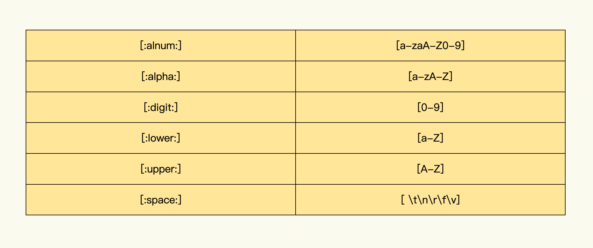

- 00 导读 入门Python的必备知识.md.html
- 00 开篇词 重复工作这么多，怎样才能提高工作效率？.md.html
- 01 拆分与合并：如何快速地批量处理内容相似的Excel？.md.html
- 02 善用Python扩展库：如何批量合并多个文档？.md.html
- 03 图片转文字：如何提高识别准确率？.md.html
- 04 函数与字典：如何实现多次替换.md.html
- 05 图像处理库：如何实现长图拼接？.md.html
- 06 jieba分词：如何基于感情色彩进行单词数量统计？.md.html
- 07 快速读写文件：如何实现跨文件的字数统计？.md.html
- 08 正则表达式：如何提高搜索内容的精确度？.md.html
- 09 扩展搜索：如何快速找到想要的文件？.md.html
- 10 按指定顺序给词语排序，提高查找效率.md.html
- 11 通过程序并行计算，避免CPU资源浪费.md.html
- 12 文本处理函数：三招解决数据对齐问题.md.html
- 13 Excel插件：如何扩展Excel的基本功能？.md.html
- 14 VBA脚本编程：如何扩展Excel，实现文件的批量打印？.md.html
- 15 PowerShell脚本：如何实现文件批量处理的自动化？.md.html
- 16 循环与文件目录管理：如何实现文件的批量重命名？.md.html
- 17 不同操作系统下，如何通过网络同步文件？.md.html
- 18 http库：如何批量下载在线内容，解放鼠标（上）？.md.html
- 19 http库：如何批量下载在线内容，解放鼠标（下）？.md.html
- 20 不同文件混在一起，怎么快速分类？.md.html
- 21 SQLite文本数据库：如何进行数据管理（上）？.md.html
- 22 SQLite文本数据库：如何进行数据管理（下）？.md.html
- 23 怎么用数据透视表更直观地展示汇报成果？.md.html
- 24 条形、饼状、柱状图最适合用在什么场景下？.md.html
- 25 图表库：想要生成动态图表，用Echarts就够了.md.html
- 26 快速提取图片中的色块，模仿一张大师的照片.md.html
- 27 zipfile压缩库：如何给数据压缩&加密备份？.md.html
- 28 Celery库：让计算机定时执行任务，解放人力.md.html
- 29 网络和邮件库：定时收发邮件，减少手动操作.md.html
- 30 怎么快速把任意文件格式转成PDF，并批量加水印？.md.html
- 春节特别放送1 实体水果店转线上销售的数据统计问题.md.html
- 春节特别放送2 用自顶至底的思路解决数据统计问题.md.html
- 春节特别放送3 揭晓项目作业的答案.md.html
- 结束语 和我一起成为10X效率职场人.md.html
- 捐赠
08 正则表达式：如何提高搜索内容的精确度？
你好，我是尹会生。
开始上课之前，我想先带你看两种常见的工作需求：
- 领导让你搜索出一个文档里所有的手机号码， 而你只知道手机号的模式是11位数字，那该怎样搜索呢？
- 你需要在一个文档中搜索一串带区号的电话号码，比如010-12345678，099-1234567 ，不过在这个文档中，有很多组电话号码，它们的区号和电话号码长度都不同，你该怎么一次性把它们全部搜索出来呢？
其实，这两种场景具有一个共同点：就是你要一次搜索出所有的结果，且不能使用具体的数字，这该怎么办呢？答案是使用某种模式进行搜索。
就像搜索手机号，我可以使用11位数字这种模式。搜索电话号码我就可以用3-4个数字或7-8个数字加上“-”的模式。这就是利用模式匹配的方法把手机和电话号码从文档中找出来，提高文本搜索的效率。
对于模式匹配，使用Python的正则表达式是最便捷、也是最有效率的。这节课，我就来手把手教你用正则表达式来提高搜索效率。
使用正则表达式进行搜索的整个过程
首先，我先带你来看下使用正则表达式进行搜索的整个过程，利用正则表达式可以按照模式来匹配搜索结果，而且比自己编写函数搜索功能更加强大,而且实现起来也更加简洁。
要实现搜索，我们就要用到Python的正则表达式库（叫做re库）中的search()函数，这是利用正则表达式实现搜索的核心函数。如果能够搜索到匹配模式的结果，就返回匹配字符串出现的文件的位置，以及匹配的字符串内容。接下来我们重点看一下它的参数。
re.search()函数有三个参数，它的前两个参数我们在工作中较为常用。
- 参数pattern：代表要匹配的模式。
- 参数string：是要匹配的字符串。如果模式能够匹配成功，则会返回一个re的对象，re对象里存储的是匹配位置和匹配内容；如果匹配失败，就会返回空，在Python中用变量“None”表示空。
- 参数flags：表示search()函数在匹配之前可以进行各种特殊处理，比如使用search()函数进行搜索之前，可以通过flag参数忽略要匹配字符串的大小写功能。
那具体怎么使用呢？我以搜索手机号码为例来给你解释下。我可以使用re.search()按如下的代码搜索一串手机号码：
re.search("[0-9]{11}","13855556666")
<re.Match object; span=(0, 11), match='13855556666'> #执行结果
代码的第一行，search()函数是一个基于正则表达式进行搜索的函数，它的第一个参数是正则表达式，第二个参数是要匹配的文字，目前它只有一个手机号码。
第二行代码是search()函数执行的结果。因为匹配成功之后会返回比较丰富的信息，所以我们需要根据搜索结果来不断优化正则表达式，达到精确匹配的目的，但是搜索结果还很复杂，所以我要带你分步骤地去分析匹配的结果都包含了哪些主要内容。
第一步：观察匹配的结果。
如果模式匹配成功，search()函数会返回一个re对象。如果匹配不成功的话，它的返回结果则是None。我们可以利用不同的返回结果，使用Python的if判断条件来控制程序的后续运行逻辑。
第二步：观察字符串的子串是在哪些位置被匹配成功的。
代码中的span=(0, 11) 表示第1个字符到第11个字符匹配成功。这里需要注意的是Python字符串的下标是以0开头的。通过下标，你可以确认匹配的内容是否是你编写的模式，如果匹配的位置或者内容不正确，可以通过下标来帮你定位匹配错误的位置，以便优化匹配模式。
最后一步，观察匹配成功的子串是否是我们想要查找的字符串内容。
如果是的话，那么此次查找结束。如果不是，我们就需要根据匹配的位置和结果，使用search()函数重新编写正则表达式。
这就是使用正则表达式进行搜索的整个工作过程。那接下来我们就来学习一下正则表达式的两种匹配方式。
两种匹配方式
编写正则表达式之前，一定要根据字符出现的不同模式来选择不同的匹配方式。匹配方式分为精确匹配和模糊匹配两种。
精确匹配需要在匹配前，就知道将要匹配的字符是什么，且出现了多少次。这类匹配使用的是一组元字符。模糊匹配是在匹配前不清楚出现的字符具体内容或不清楚字符的重复次数，这种匹配需要使用另一组元字符。我们先来看看精确匹配方式。
精确匹配
在手机号码搜索的场景中，我使用了正则表达式 “[0-9]{11}”，你可以看到，我除了用数字外，还使用了很多特殊字符。这些特殊字符有一个专用的名字，叫做元字符，正则表达式就是利用元字符进行模式匹配工作的。
在正则表达式“[0-9]{11}”中包含了两组元字符，“[]”和“{}” 。
- “[]”的作用是进行内容模式匹配；
- “{}”的作用是指定匹配长度。
我们先从[0-9]来认识元字符吧。
在正则表示式“[0-9]” 中， “[]”表示同一个位置可能出现的各种字符。例如：我需要从文档中匹配到一个数字，可以使用[1234567890]的形式，也可以使用[0987654321]的形式。而在[]中，字符排列的顺序并不会影响它的功能，出现重复字符也不会影响它的功能。
不过为了代码更整洁，我不建议你在[]中使用重复的字符。
使用[]对一个数字进行匹配的时候，如果从0写到9，一一列出比较麻烦，所以在[]中还支持一个“-”符号，叫做连字符。把连字符与数字写在一起，表示数字的范围。当然，你肯定会想到还有英文字母的场景，比如从A到Z或者从a到z，表示英文字母的范围。具体写法如下：
[0-9] #匹配任意一个数字
[a-zA-Z] #匹配任意一个字母
除了可以自己手写匹配字母和数字外，还有另外一种写法，就是把我们经常需要匹配的字符进行定义。我为你提供一张POSIX字符组合和ASCII字符组合的常用对照表，帮你来记住它们。

在你掌握了元字符“[]”的用法之后，我们接着来看怎么通过“{}”来限定“[]”的匹配长度。
在正则表达式 “[0-9]{11}”中， 我使用了{11}来限定它前边的字符出现11次。{}还可以使用**{m，n}的形式，表示限定的次数从m到n次**。这是在匹配不确定字数的情况下，经常用到的写法，例如进行电话号码的区号匹配，可以使用“[0-9]{3,4}”的形式匹配3个或4个数字。
使用“[]、{}” 两种元字符，属于精确的模式匹配。如果你在编写正则表达式之前就知道，即将匹配的字符是数字还是英语，以及它们出现的次数，那就使用这两个元字符对将要进行搜索字符进行匹配。
模糊匹配
不过还有一种情况就是，你只知道某个元素会重复出现多次，但是在匹配前不知道具体会出现多少次，或者只知道要匹配的是五个字符，但是不知道这五个字符到底是数字、汉字还是英文，这种匹配的行为就叫做模糊匹配。
例如下面三个元字符“+”、“*”、“?”可以实现出现次数的模糊匹配功能。
- “+”表示前边的元素出现的是1到无穷多次。
- “*”表示前面的元素出现的是0次到无穷多次。
- “？”表示前面的元素出现的是0次或一次。
我以正则表达式“ab+c”为例，它表示在这个模式中b至少出现了一次，最多出现无穷多次。也就是说，我们能够通过search()函数搜索到abc、abbc、abbbc、abbbbc等模式。
如果匹配的模式再复杂一些，假设说在匹配之前我们只知道第一个字母是a，最后一个字母是b，中间是五个任意的字母。在这种情况下，就需要使用元字符“.”符号， 它在正则表达式中能匹配任意的单个字符。
为了让你更好理解元字符“.”， 我们就来看一个搜索任意5个字符的例子，代码如下：
re.search(".....", "aaa13855557890bbb")
re.search(".{5}", "aaa13855557890bbb") # 也可以这样写
上面代码匹配出的结果是”aaa13”。
这里需要提醒你注意，如果你想匹配的字符串只包含5个字符，那就需要增加匹配的限定条件的元字符“＾”和“\(”。**“＾”表示从第1个字符开始匹配。“\)”表示从结尾开始匹配。**所以你需要将正则表达式”…..“改为”＾…..$“形式，才能实现只匹配5个字符的模式。
通过上面的“[] {} . ? * +”这六种元字符组合，你就能够使用search()函数通过正则表达式搜索到大部分的模式了。
提取和替换：如何处理搜索到的结果
当你搜索到你想要的文字之后，往往还需要进行后续的内容提取和替换处理，这些后续处理如果手动完成也属于低效的工作。因此，接下来我来教你怎样将search()函数搜索到的内容进行提取，以及如何使用sub()函数实现将正则表达式匹配到的内容进行替换。我们先来看怎么进行内容的提取。
以电话号码为例，如果需要将搜索的结果提取出来，可以使用group()函数，进行search()函数搜索之后的内容提取操作。
我们先来看一下提取搜索结果的例子：
import re
re.search("[0-9]{3}-[0-9]{8}",
"我的电话号码:010-12345678.").group(0)
'010-12345678' # 执行结果
通过group(0)函数的参数“0”，如果搜索过程中能够匹配成功，search()函数就会把匹配到的第一个字符串作为执行结果，返回给用户继续进行自动化处理。
再进一步，如果我要替换匹配到的字符串，那就需要把search()函数改为sub()函数。sub()函数包含三个参数，依次是：要匹配的正则表达式、匹配后被替换的字符串、匹配的原始文档。
那我就以替换字符串为例，来教你怎么把文档中的yes字符串替换为no字符串。代码如下：
re.sub("(Y|y)(es)*", "No", "aayesbb")
'aaNobb' # 执行结果
在这段代码中，为了将“Y、yes、Yes”，三个字符串都替换为“No”。同时，为了不用多次执行sub()替换函数，我使用了“()”分组功能和“|”选择功能。那么通过(Y|y)这一写法，就能实现第一个字符匹配“Y”和“y”；利用“()”分组功能，使用“(es)*”正则表达式实现了第二、三个字符是“es”或是没有字符的功能。
总结来说，通过group()函数和re.sub()函数，我们可以在搜索之后自动化实现内容的提取和替换操作。
小结
在最后我来为你总结一下搜索中的常见问题，以及对应的解决方案。
如果遇到了大量的需要按照某种模式才能得到搜索结果的场景，你可以在第一时间采用正则表达式的方法进行内容的匹配。如果字符长度固定，可以使用精确搜索的元字符“[]”和“{}” 。反之，在字符长度不固定的情况下，那就使用模糊搜索的元字符“+”、“*”、“?”“.”“＾”和“$”。
正则表达式的元字符组合非常灵活，为了方便你记忆，我把它们分为三类：
- 匹配单个字符，要使用“[ ]”和“.”元字符。
- 控制元字符出现次数，要使用“？”、“+”和“*”元字符。
- 控制元字符的顺序和位置，要使用“＾”、“$ ”、“ | ”和“ ()”元字符。
在掌握正则表达式的正确编写基础上，你就可以通过re库的函数实现按模式搜索、内容提取和内容替换了。正则表达式不但在Python中能够使用，它还能在搜索引擎以及大部分的编程语言中使用，被广泛应用与字符串搜索和替换工作中。
我把这节课相关的代码给你放在了GitHub中，你可以参考。
思考题
最后我给你留一道思考题，你将如何使用re库的search()函数，实现身份证的匹配和提取功能呢?
© 2019 - 2023 Liangliang Lee. Powered by gin and hexo-theme-book.